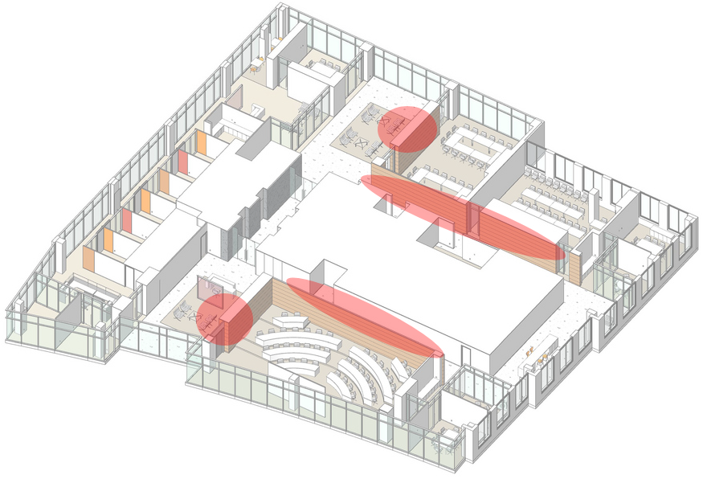

VTRC-A
Dynamic Content Editor
Select Zone
Manage Content
Click on the red areas to change that area's content.

Created by Group F : Weston Thayer, Alexandre Vann, David Jacobs, Matt Ryburn
Design of Information, Fall 2011, Copyright 2011